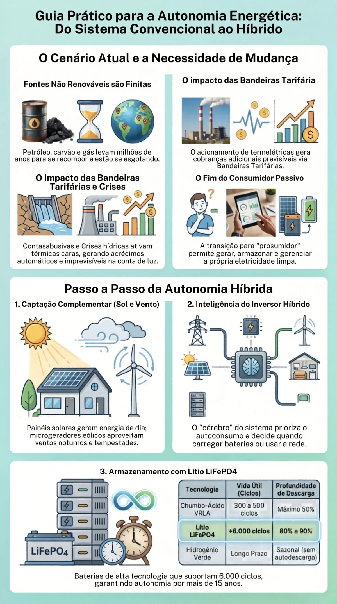
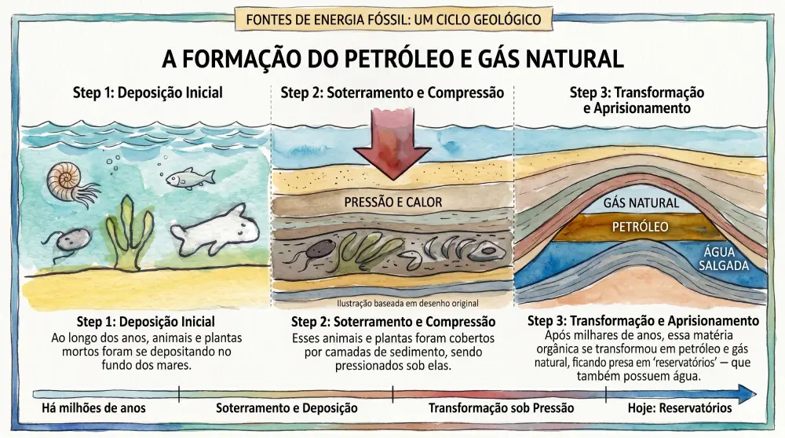
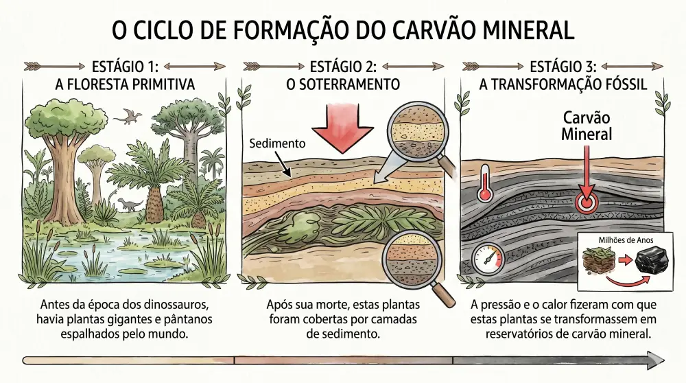

Combustíveis Fósseis: Petróleo, Gás Natural e Carvão Mineral

Os combustíveis fósseis são formados pelo depósito profundo de matéria orgânica — restos de plantas, algas e animais mortos — que permaneceu soterrada por centenas de milhões de anos sob condições físico-químicas muito específicas de alta pressão e temperatura.
1.1 Petróleo e Gás Natural: Formação Geológica e Extração
Geologicamente, o petróleo e o gás natural ocorrem em formações denominadas bacias sedimentares. Essas áreas correspondem a porções da superfície terrestre ou do fundo do mar que, por serem mais baixas e planas que o relevo circundante, acumularam espessas camadas de fragmentos de rochas (sedimentos) e matéria orgânica ao longo das eras geológicas.

Ao contrário do que muitos imaginam, o petróleo não fica armazenado em grandes cavernas subterrâneas ou "lagos" líquidos. Ele fica retido em microporos (aberturas minúsculas) localizados no interior de rochas sedimentares porosas, conhecidas tecnicamente como rochas reservatórios. Atualmente, o ranking dos maiores produtores mundiais desses hidrocarbonetos inclui potências como os Estados Unidos, a Arábia Saudita, a Rússia e o Iraque. Em algumas regiões específicas do planeta, como no Canadá, o petróleo também pode ser encontrado misturado a areias betuminosas próximas à superfície, exigindo métodos diferenciados de mineração e refino.
💡 Curiosidade Técnica e a Transição Energética
Apesar da dependência global dos fósseis, a transição para fontes limpas avança rápido. Descubra como gerar sua própria eletricidade sustentável de forma econômica em nosso guia completo.
Conheça as Melhores Soluções de Energia Solar Atuais1.1.1 A Indústria Petrolífera no Brasil e o Desafio Técnico do Pré-Sal
No cenário brasileiro, a produção de petróleo e gás natural ocorre de forma predominantemente marítima, com especial destaque para a região Sudeste. O grande divisor de águas da autonomia energética nacional foi a descoberta e exploração do horizonte geológico conhecido como Pré-sal.
O petróleo do Pré-sal representa um dos maiores desafios de engenharia do mundo. Os poços estão localizados a grandes profundidades marinhas, posicionados abaixo de uma extensa, instável e plástica camada de sal no subsolo do assoalho oceânico. A extração nesse ambiente exige sondas de perfuração de altíssima tecnologia, modelagem sísmica computadorizada e ligas metálicas especiais resistentes à corrosão e à extrema pressão hidrostática e litostática.
1.1.2 A Distinção Técnica: Exploração Onshore vs. Offshore
Dentro do jargão técnico da engenharia de energia, utilizam-se dois termos fundamentais para categorizar a localização geográfica e operacional das bacias sedimentares exploradas:
- Onshore: Refere-se às operações de exploração e produção realizadas em terra firme. Apresenta custos logísticos e operacionais comparativamente mais baixos, embora os volumes de produção por poço tendam a ser menores em comparação com as grandes bacias marítimas modernas.
- Offshore: Refere-se à exploração conduzida em bacias sedimentares marítimas, ou seja, em pleno mar. Exige o emprego de plataformas flutuantes ou fixas de alta complexidade (semi submersíveis, navios do tipo FPSO, jaquetas) e infraestrutura submarina robusta. É onde se concentra a maior fatia da produção de alta produtividade do Pré-sal brasileiro.
1.1.3 O Petróleo Além da Energia: Presença Invisível no Nosso Cotidiano
A importância do petróleo vai muito além do refino de gasolina, óleo diesel e querosene de aviação para a movimentação de veículos e maquinários. Os derivados petroquímicos fazem parte da nossa rotina durante 24 horas por dia, manifestando-se em produtos que consumimos e utilizamos sem nos darmos conta de sua origem fóssil:
Descanso e Conforto: No final do dia, o colchão e o travesseiro de espuma de poliuretano expandido garantem o repouso sobre estruturas químicas originadas diretamente do processamento do petróleo.
Devido a essa onipresença e à alta durabilidade dos polímeros no meio ambiente, torna-se um imperativo de consumo consciente a prática contínua de reutilização e reciclagem do plástico, mitigando os severos danos acumulados que o descarte incorreto causa à fauna, à flora e aos oceanos.
1.2 Carvão Mineral: Formação e Distribuição Geopolítica
O carvão mineral é uma rocha sedimentar combustível que se diferencia completamente do carvão vegetal (obtido pela carbonização de lenha). Ele é encontrado em depósitos subterrâneos chamados jazidas, originadas a partir do soterramento e fossilização de antigas florestas e pântanos que existiram há mais de 200 milhões de anos (durante os períodos Carbonífero e Permiano).

As maiores e mais ricas jazidas mundiais de carvão mineral concentram-se geopoliticamente nos Estados Unidos, na Rússia e na China. No território brasileiro, as ocorrências de carvão mineral concentram-se predominantemente na região Sul, com destaque para os estados do Rio Grande do Sul e Santa Catarina. Embora o carvão nacional possua um menor poder calorífico e maior teor de cinzas e enxofre em comparação ao carvão importado da Austrália ou Colômbia, ele desempenha um papel estratégico na segurança do suprimento elétrico da região meridional do país através de usinas termelétricas locais posicionadas próximas às minas.
Para reduzir a pegada ecológica dessas matrizes regionais, sistemas baseados em armazenamento de energia e geração eólica vêm sendo integrados gradativamente de forma híbrida.
1.3 Rotas de Conversão e Riscos Ambientais Associados
Para que a energia armazenada nos combustíveis fósseis se transforme em energia útil, eles precisam ser direcionados a equipamentos de conversão térmica ou mecânica, tais como caldeiras industriais, turbinas a vapor e motores de combustão interna.
| Aplicação / Ambiente | Mecanismo de Conversão | Resultado Energético |
|---|---|---|
| Usinas Termelétricas | Queima aquece caldeira gerando vapor de alta pressão para acionar turbinas | Eletricidade Centralizada |
| Veículos Automotores | Explosão controlada do combustível no interior dos cilindros mecânicos | Energia Cinética (Movimento) |
| Residencial / Comercial | Queima direta de gás natural em fogões e aquecedores de passagem | Energia Térmica Direta |
1.3.1 Impactos da Cadeia Operacional dos Fósseis
A operação e manutenção da cadeia de combustíveis fósseis carregam severos riscos socioambientais que exigem monitoramento rigoroso e constante por parte de empresas e órgãos de defesa ambiental:
- Emissões Atmosféricas: A combustão inevitavelmente gera subprodutos poluentes (óxidos de enxofre - SOx, óxidos de nitrogênio - NOx, material particulado) e gases de efeito estufa (CO2).
- Vazamentos e Contaminações: Falhas catastróficas resultando em vazamentos de óleo bruto durante as etapas de extração oceânica ou no transporte por meio de navios petroleiros, caminhões-tanque e dutos.
- Impactos da Mineração de Carvão: Águas pluviais podem lavar pilhas de rejeitos sem contenção adequada, lixiviando metais pesados e compostos ácidos diretamente para os rios.
- Saúde Ocupacional: Ambientes insalubres, riscos de explosões, inalação de poeiras tóxicas e contaminações químicas crônicas para os operadores.
Pronto para fazer parte da mudança energética?
Deixe de depender exclusivamente das redes alimentadas por termelétricas poluentes. Encontre equipamentos de energia renovável certificados com as melhores ofertas do mercado.
Ver Equipamentos de Energia Limpa no Mercado Livre